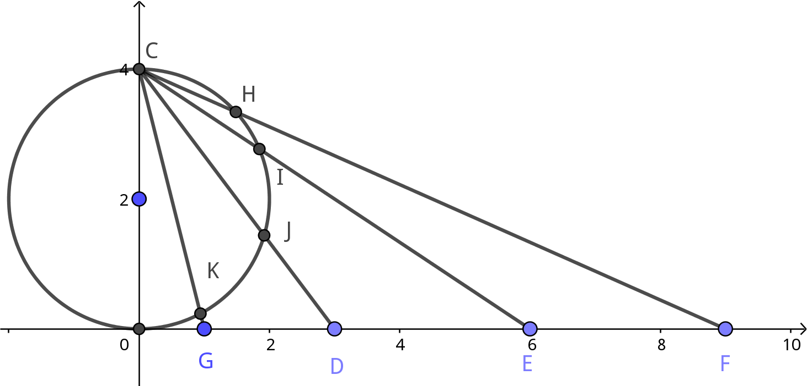

Information
- 原出处: https://www.perimeterinstitute.ca/video-library/collection/11/12-psi-mathematical-physics
- 可以看自动生成的字幕: https://www.youtube.com/playlist?list=PLzcd6SoIscwjHuWRE38UXWG92uq0Sy4UF
- Bilibili: https://www.bilibili.com/video/BV1w4411q7x6?from
search&seid7852838902448285010 - Book: Carl M. Bender, Steven A. Orszag, Advanced Mathematical Methods for Scientists and Engineers I Asympotic Methods and Perturbation Theory, 1999
Keywords
Summation of divergent series continued. Analytic continuation of zeta and gamma functions. The anharmonic oscillator.
Divergent Series Are Not Bad
不收敛的级数比收敛的级数更容易提取信息.
接着上节课的讲. 继续算一些发散的级数求和
$$\begin{align} S = & \mathcal{S} ( 1+ 2 + 4 + 8 + \cdots) \label{eq:2n}\\ = & 1 + \mathcal{S} ( 2 + 4 + 8 + 16 \cdots)\\ = & 1 + 2\mathcal{S} ( 1 + 2 + 4 + 8 + \cdots) \end{align}$$求得 $S = -1$ . 一些正数相加竟然得到了一个负数. 实际上这些求和 really working in the complex plane, 而在复平面上, 没有比较数的大小一说, we give up symbol " $\, < \,$ ". 可以用下面的方式理解这个结果. 将轴上的点投影到复平面的一个圆上

如图, 将 $G$ 投影到 $K$ , 将 $D$ 投影到 $J$ , 将无穷远点投影到 $C$ (在复数中, 无 穷远点是一个点, 不像实数一样有 $+ \infty, - \infty$ 之分) . 求和所做的类似于将 $K, J, I, H$ 求和, 然后再将结果投影回实轴上.
题外话, 将地球做成平面的地图, 也需要将球上的每一点投影到一个平面上. 这有许多投影 方法. 其中现在许多地图采用的是 Mercator projection, 比如 Google maps 就是采取这 种方式, 它的优点在于地图上的方向和实际方向是一致的, 国家的形状也一致, 但是面积会 很不同. 有一个网站可以比较不同国家的真实面积: https://www.thetruesize.com/
再来求另一个 series
$$\begin{align} S =& \mathcal{S}(1 + 1 + 1 + 1 + 1 + \cdots) \label{eq:sum1}\\ =& 1 + \mathcal{S}(1 + 1 + 1 + 1 + \cdots) \\ =& 1 + S \end{align}$$因此 $S = \infty$ . 比较 (\ref{eq:2n}) 和 (\ref{eq:sum1}) 会发现一个有意思的结果, (\ref{eq:2n}) 的每一项都大于或等于 (\ref{eq:sum1}) , 但结果却是 $-1$ 和 $\infty$ . 原因还是在于复数中没有大于这种说法.
Meaning of What We Are Doing?
$\zeta$ function 定义为
$$\begin{align} \zeta(z) = \sum_{n = 1}^{\infty} \frac{1}{n^z} \end{align}$$其中 $z$ 是一个复数. $z$ 取偶数时它与 $\pi$ 有关
$$\begin{align} \zeta(2) =& 1 + \frac{1}{2^2} + \frac{1}{3^2} + \cdots = \frac{\pi^2}{6} \\ \zeta(4) =& 1 + \frac{1}{2^4} + \frac{1}{3^4} + \cdots = \frac{\pi^4}{90} \\ \zeta(6) =& 1 + \frac{1}{2^6} + \frac{1}{3^6} + \cdots = \frac{\pi^6}{945} \end{align}$$但是奇数都无法准确的写出来. 如
$$\begin{align} \zeta(3) \approx 1.202\cdots \end{align}$$叫做 Apéry's constant. $\zeta(z)$ 函数在 $z = 1$ 处有一个 singularity, $\zeta(1) = \infty$. 如果计算 $\zeta(0)$ , 会发现 $\zeta(0) = 1 + 1 + 1 + \cdots -\frac{1}{2}$ , 而不是前面 用 generic machine 得出的 $\infty$ , 因为 $\zeta$ function 不满足之前提出的那两个性质. $\zeta$ summation 是另外一种 summation machine. 用这种求和, 会发现
$$\begin{align} \zeta(-1) = 1 + 2 + 3 + 4 + \cdots = - \frac{1}{12} \end{align}$$计算 $\zeta$ function 的方法是 analytic continuation. analytic continuation 的结果 是唯一的. function 是一个抽象的概念, 它可以有不同的 representation, 比如
$$\begin{align} f(x) = \frac{1}{1 - x} , \quad x\neq 1 \end{align}$$也可以有另外的表示
$$\begin{align} f(x) = \sum_{n=1}^{\infty} x^n , \quad | x | < 1 \end{align}$$这两种表示各自有不同的适用区间. 以 $\Gamma$ function 为例, 它本身是抽象的, 它的 Euler representation
$$\begin{align} \Gamma(x) = \int_0^{\infty} \mathrm{d}t \cdot e^{-t} t^{x-1} \end{align}$$但它只在 $\mathrm{Re} x > 0$ 时有效, 否则它就发散了. 但 $\Gamma$ function 在其它区域 也是存在的, 只是需要另一个表示. $\zeta$ function 也是类似的, 那个表示在 $\zeta(0)$ 处 doesn't work, 但是可以找到一个积分表示, 它在 $\zeta(0)$ 处是可以算出的. 回到 $\Gamma(x)$ function , 可以用另一种表示研究它在 $\mathrm{Re}x < 0$ 时的行为
$$\begin{align} \Gamma(x) =& \int_1^{\infty}\mathrm{d}t\cdot e^{-t} t^{x-1} + \int_0^1 \mathrm{d}t \cdot e^{-t} t^{x-1} \end{align}$$第一项对于任意 $x$ , 它都有良好的定义, 而第二项 $0 < t < 1$ ,可以做 Taylor 展开, $e^{-t} = \sum_{n=0}^{\infty} \frac{(-1)^n}{n!}t^n$ , 它是一致收敛, 绝对收敛的, 可以交换 积分与求和的顺序, 因此
$$\begin{align} \int_0^1 \mathrm{d}t \cdot e^{-t} t^{x-1} = \sum_{n=0}^{\infty}\frac{(-1)^n}{n!} \int_0^1 \mathrm{d}t \cdot t^{n + x - 1} = \sum_{n=0}^{\infty}\frac{(-1)^n}{n!(n + x)} \end{align}$$最后的求和对 $\mathrm{Re}x < 0$ 且不是整数时也可以求. 现在可以考虑 $x\to 0$ 时 $\Gamma(x)$ 的行为. 会发现相比于求和的第一项, 所有其它项都是可以忽略的
$$\begin{align} \frac{1}{1(0 + x)} \sim \frac{1}{x} \quad \mathrm{as} \, x \to 0 \end{align}$$因此 $\Gamma(0) = \infty$ $\zeta$ 函数比这更加复杂, 但也是类似的操作. 对于 $\zeta(z)$ 函数来说, 当 $z \to 1$ 时, 它是 log 发散的.
后面 Bender 又提到了 Casimir force 什么的. 两条平等的接近的船相互吸引 ...
$\Gamma$ function 并不能由 $n!$ 的表示延拓出来, 因为我们可以给它加上一个在整数上都为 零的函数, 比如 $\sin(n\pi)$ . 所以它不是唯一的. 而 stirling 表示是可以的.
之后和上节课类似地, 解释了发散求和与微扰的关系.
What If We Don't Know All The Terms In The Series?? WE USE CONTINUED FUNCTIONS!
实际物理问题中计算微扰是很麻烦的, 所以并不能很容易地得到很多项, 往往只得到前几项.
Taylor 级数只在收敛半径内收敛, 但是物理上, 我想要的是收敛半径以外的结果. 有一种 方法是把 Talyor 级数的函数表示转化成 continued functions 的表示形式.
如 continued exponential function.
$$\begin{align} f(x) =& \sum_{n=0}^{\infty} a_n x^n \\ =& b_0e^{b_1x e^{b_2x e^{b_3x \cdots}}} \end{align} $$已知 $a_n$ 的前 $N$ 项, 可以求出 $b_n$ 的前 $N$ 项, 反之亦然. 如果所有 $b_n = 1$ 它们之间的确切关系为
$$\begin{align} \label{eq:contiExp} e^{x e^{x e^{x \cdots}}} = \sum_{n=0}^{\infty} \frac{(n + 1)^{(n - 1)}}{n!}x^n \end{align}$$假设通过艰难的微扰计算, 我们得到了上式的右边, 我们将它转换成上式左边的形式. 左边 比右边的表示要好, 下面进行解释.
先来求一下右边的收敛半径.
在 $n$ 很大的时候 (stirling approximation)
$$\begin{align} n! \sim n^{n + \frac{1}{2}} e^{- n} \sqrt{2\pi},\quad \mathrm{as} \, n\to \infty \end{align}$$所以(忽略可以忽略的 $1, \frac{1}{2}, \pi\cdots$ 这样可以忽略的量)
$$\begin{align} \frac{(n + 1)^{(n - 1)}}{n!} \sim \frac{n^n}{n^ne-^n} \sim e^n ,\quad \mathrm{as} \, n\to \infty \end{align}$$所以 (\ref{eq:contiExp}) 右边的求和只在 $| x | < \frac{1}{e}$ 内收敛.
接下来考虑如何计算 (\ref{eq:contiExp}) 左边. 分别计算如下 $A_n$
$$\begin{align} A_1 =& e^x \\ A_2 =& e^{x e^x} \\ A_3 =& e^{x e^{x e^x}} \\ \vdots & \end{align}$$事实证明 sequence $\{A_n\}$ 会在一个比 (\ref{eq:contiExp}) 右边的求和更大的范围内 收敛到一个唯一的值. 它的收敛区间的形状是一个心脏线 (Cardioid)
之后 Bender show 出了一张它想让同学们在周末会梦到的图片.
Summary
本节的主题还是发散级数求和.
Reference
- https://en.wikipedia.org/wiki/Riemann_zeta_function